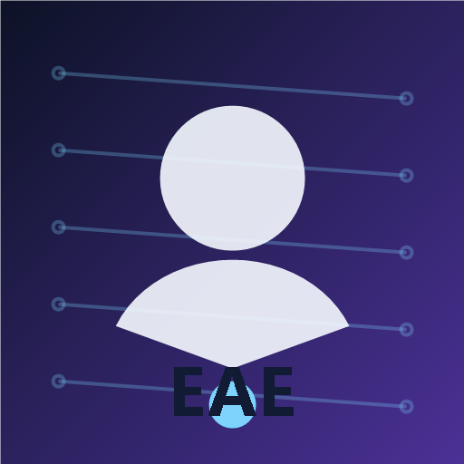

Life Entry
Evidence Overview
My Evidence at a Glance
Personal Story
Who I Am
My Pattern
How I usually approach difficult work
Personal qualities
Beyond The Build
Learning In Context
The people, presentations, and small moments behind the portfolio.
Achievement Flow
How Each Achievement Builds Into the Next
Work
Featured Projects
Case studies are written to show the problem, approach, role, technologies, development journey, outcome, and learning.
Applications
Target EAE Applications
Institution-specific notes stay editable so the portfolio can support both Singapore Polytechnic and Ngee Ann Polytechnic without making unconfirmed course claims.
Evidence Library
Achievement Story
These cards support the flow above. Open each one for the fuller description, reflection, learning outcome, images, and certificates.
Timeline
Competitions
Competition Journey
Competition entries use confirmed facts first and leave unverified results, roles, dates, and reflections as editable placeholders.
Technical Interests
Coding
Learning Path
The Lab Coder: Foundation to Intermediate
A card view of the programme details extracted from the local pitchbook, written as evidence of learning progression rather than inflated claims.
Skills Alignment
Relevant SkillsFuture Skills
Selected skills from the local SkillsFuture jobs-and-skills spreadsheets that connect to my projects, robotics work, and EAE direction.
Engineering Thinking
Robotics
Reflection
Reflection Journal
Prompts are prepared for authentic reflection after each experience.
Records
Certifications
Certification details are editable and should be updated only with confirmed provider names, dates, and evidence.
Direction
Future Goals
Short-term
Long-term
Additional Evidence